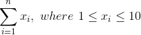

Examples
Below are some examples of the functions that might be used to pass in to the parameters of the optimization functions. There are two basic frameworks provided as examples. The first framework is an example of a very simple objective function to be maximized:
This objective function simply sums up the values of values of x for i = 1,2,...,n. With no additional constraints given, the optimal solution is where all decision variables are set to 10. This is a trivial problem to solve, but nonetheless a useful example for how to use this library.
The second set of example functions will be for the travelling salesman problem (TSP), which asks the following question: Given a list of cities as well as distances between each pair of cities, what is the shortest route that visits each city once and only once and then returns to the origin city? This is a classic NP-complete optimization problem that is often used for testing optimization algorithms.
The simple example
As stated previously, the objective function for the "simple example" simply returns the sum of all the values in a passed in array. Below is an example of this fitness function:
func simple_evaluation(a []int) (sum float64) {
for i := 0; i < len(a); i++ {
sum += float64(a[i])
}
return sum
}
func simple_get_neighbors(current_state []int) [][]int {
minval := 1
maxval := 10
neighbors := make([][]int, 0)
temp := make([]int, len(current_state))
for i, value := range current_state {
if value > minval {
copy(temp, current_state)
temp[i] = value - 1
neighbors = append(neighbors, make([]int, len(current_state)))
copy(neighbors[len(neighbors)-1], temp)
}
if value < maxval {
copy(temp, current_state)
temp[i] = value + 1
neighbors = append(neighbors, make([]int, len(current_state)))
copy(neighbors[len(neighbors)-1], temp)
}
}
return neighbors
}
func simple_create_random_start() []int {
size := 6
random_start := make([]int, size)
for i := 0; i < len(random_start); i++ {
random_start[i] = random_int(1,10)
}
return random_start
}
This function calls the random_int function, which is defined as follows:
func random_int(min, max int) int {
return rand.Intn(max+1-min) + min
}
The genetic algorithms requires you to pass in functions for mutations and crossover. Below are samples of such functions for this problem:
func simple_mutate(input_individual []int, mutation_rate float64)([]int) {
output_individual := make([]int, len(input_individual))
var rand_num float64
for i := 0; i < len(input_individual); i++ {
rand_num = rand.Float64()
if (rand_num < mutation_rate) {
output_individual[i] = random_int(1,10)
} else {
output_individual[i] = input_individual[i]
}
}
return output_individual
}
func simple_crossover(parent1 []int, parent2 []int)([]int) {
var rand_num int
child := make([]int, len(parent1))
for i := 0; i < len(child) ; i++ {
rand_num = rand.Intn(2)
if (rand_num == 0) {
child[i] = parent1[i]
} else {
child[i] = parent2[i]
}
}
return child
}
// Hill climbing
p := []int{2, 3, 5, 4, 1, 6}
best_solution, highest_score := hill_climb(p, simple_evaluation, simple_get_neighbors)
// Beam search
best_solution, highest_score := beam_search(50, simple_evaluation, simple_create_random_start, simple_get_neighbors)
// Tabu search
p := []int{2, 3, 5, 4, 1, 6}
best_solution, highest_score = tabu_search(p, 4, 2, simple_evaluation, simple_get_neighbors)
// Simulated annealing
p := []int{2, 3, 5, 4, 1, 6}
best_solution, highest_score := simulated_annealing(p, simple_evaluation, simple_make_change, 10, 0.9, 1000, 10)
// Genetic algorithm
best_solution, highest_score := genetic_algorithm(10,simple_evaluation,simple_create_random_start,simple_mutate,simple_crossover,0.1,1000,1)
Travelling salesman problem example
As stated previously, the travelling salesman problem (TSP) aims to find the shortest path that visits each city in a group once and only once, and then returns to the starting city. The file located here contains the Berlin52 dataset, which is a commonly used dataset for testing the TSP problem. Below are the various functions that can be used to run the algorithms on the TSP. These functions are used in the same manor as the corresponding functions in the "simple" example:
// Given a candidate solution, find the total distance travelled
func tsp_evaluation(path []int) (sum float64) {
for i := 0; i < len(path); i++ {
sum -= norm(g_data[path[i]][0], g_data[path[i]][1], g_data[path[(i+1)%len(path)]][0], g_data[path[(i+1)%len(path)]][1])
}
return sum
}
// Create a random starting solution
func tsp_create_random_start() []int {
size := len(g_data)
return rand.Perm(size)
}
// Make a single change to the candidate solution by swapping two cities
func tsp_make_change(current_solution []int) []int {
length := len(current_solution)
return_value := make([]int, len(current_solution))
copy(return_value, current_solution)
random_int_1 := random_int(0,length-1)
random_int_2 := random_int(0,length-1)
temp := return_value[random_int_1]
return_value[random_int_1] = return_value[random_int_2]
return_value[random_int_2] = temp
return return_value
}
// The mutation function for the genetic algorithm
func tsp_mutate(input_individual []int, mutation_rate float64)([]int) {
output_individual := make([]int, len(input_individual))
copy(output_individual,input_individual)
var rand_num float64
for i := 0; i < len(input_individual); i++ {
rand_num = rand.Float64()
if (rand_num < mutation_rate) {
output_individual = tsp_make_change(output_individual)
}
}
return output_individual
}
// The crossover function for the genetic algorithm
func tsp_crossover(parent1 []int, parent2 []int)([]int) {
// create an empty slice to hold the child
child := make([]int,len(parent1))
for i := 0; i < len(child); i++ {
child[i] = -1
}
// pick a starting point and ending point from parent 1
start := random_int(0,len(parent1)-1)
end := random_int(0,len(parent1)-1)
// switch them if end < start
if (end < start) {
temp := end
end = start
start = temp
}
// set the elements from start to end in child to those elements in parent1
for i := start; i <= end; i++ {
child[i] = parent1[i]
}
// now add objects not in the child currently to the child in the second
// parent's order
position := 0
for i := 0; i < len(child); i++{
if (i < start || i > end) {
for (intInSlice(parent2[position],child)) {
position += 1
}
child[i] = parent2[position]
position += 1
}
}
return child
}
The following supporting function is called by the tsp_evaluation function to find the distance between two cities:
func norm(x1 int, y1 int, x2 int, y2 int) float64 {
return math.Sqrt(float64(x1-x2)*float64(x1-x2) + float64(y1-y2)*float64(y1-y2))
}
This function is called by the TSP crossover function for genetic algorithms to check if a slice already contains a given value:
func intInSlice(a int, list []int) bool {
for _, b := range list {
if b == a {
return true
}
}
return false
}
Finally, you may have noticed a variable g_data that was called by several of the functions above. This is a global variable that contains the data for the cities in the TSP problem. This variable should be initialized before running any of the algorithms by calling the tsp_setup_data function below:
var g_data [][]int
func tsp_setup_data() {
file, err := os.Open("tsp_data.csv")
if err != nil {
fmt.Println("Error:", err)
return
}
defer file.Close()
reader := csv.NewReader(file)
for {
record, err := reader.Read()
if err == io.EOF {
break
} else if err != nil {
fmt.Println("Error:", err)
return
}
g_data = append(g_data, make([]int, 2))
//g_data[len(g_data)-1][0] =
value1, err := strconv.Atoi(strings.TrimSpace(record[0]))
value2, err := strconv.Atoi(strings.TrimSpace(record[1]))
g_data[len(g_data)-1][0] = value1
g_data[len(g_data)-1][1] = value2
}
}